WSL安装ArchLinux和Sagemath
（默认配置）仅在WSL中安装sagemath
首先在控制面板中启用虚拟化平台功能
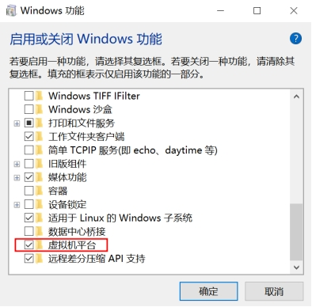
安装wsl，使用命令wsl –install，等待windows完成虚拟化系统的下载和安装，如果出现以下错误，并且确定虚拟化已经打开
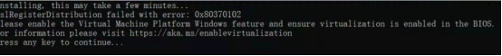
执行bcdedit /set hypervisorlaunchtype auto命令后重启电脑，即可成功启动wsl，wsl中安装的操作系统可以用命令wsl -l -v 进行查看
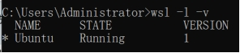
通过命令行直接运行wsl，即可直接进入Ubuntu系统

修改/etc/apt/sources.list将源更新为国内源，直接使用apt命令安装segamath即可
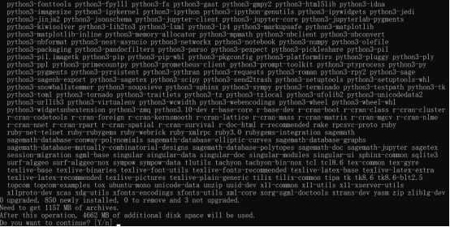
安装完成后即可启动，阿里云源中的sagemath版本为9.5
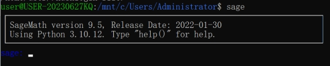
WSL中安装Arch Linux和最新版本Sagemath
由于Ubuntu的阿里云源中提供的Sagemath版本仅9.5，因此安装最新版本的只能通过编译完成，如需快捷安装需在Arch linux中进行。使用wsl寻找镜像命令时发现官方的源中并没有ArchLinux，因此需要去第三方进行下载

访问清华源地址下载最新版本的ArchLinux的tar.zst文件，下载完成后解压并通过zstd命令和gzip命令转化为tar.gz，在github下载安装工具，使用如下命令进行安装
LxRunOffline.exe i -n Arch -f D:/WSLArch/archlinux-bootstrap-2024.07.01-x86_64.tar.gz -d D:/WSLArch/Arch -r root.x86_64

执行完成后可以看到Arch已经安装完成，使用命令即可进入系统
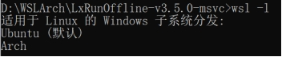
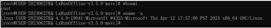
由于系统比较简陋，很多常见命令都没有，需要进行额外配置
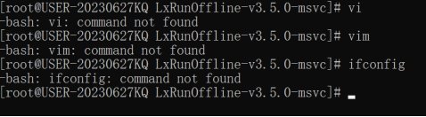
由于默认的Arch过于精简，没有相关应用，因此需要在Windows上使用编辑器编辑/etc/pacman.conf，修改如下配置
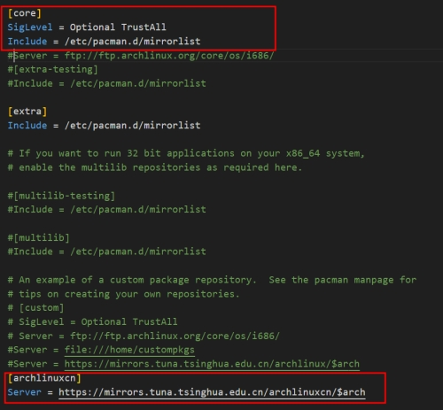
编辑/etc/pacman.d/mirrorlist，选择合适的源

安装完成后使用pacman -Syu更新
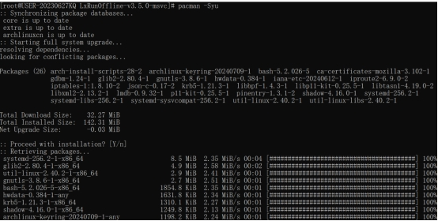
更新完成后依次执行
pacman-key --init
pacman-key --populate
pacman -Sy archlinux-keyring
之后再用passwd更新一下口令，基本配置就完成了

使用pacman安装Sage
pacman -Sy sagemath

安装完成后即可运行10.3版本的sage

之后还需要配置Jupyter，使用pacman安装
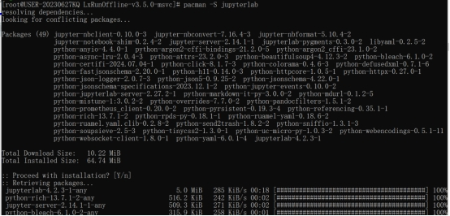
安装完成后使用命令启动Jupyter Server
sage -n jupyterlab --no-browser --allow-root
打开浏览器测试是否可以访问，如能访问则安装完成
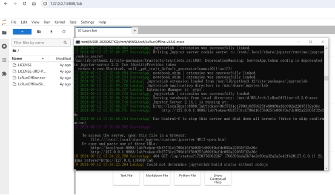